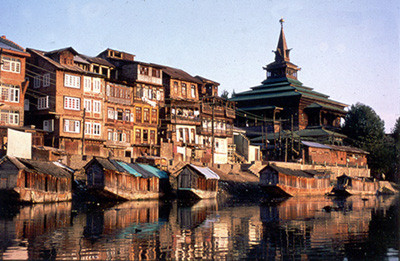
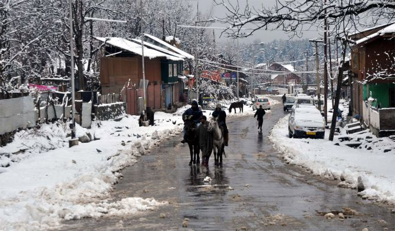
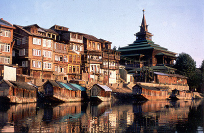
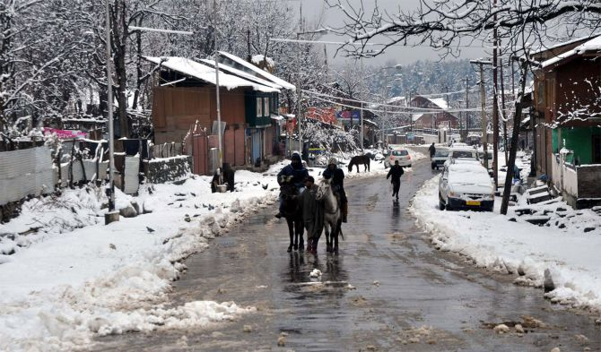
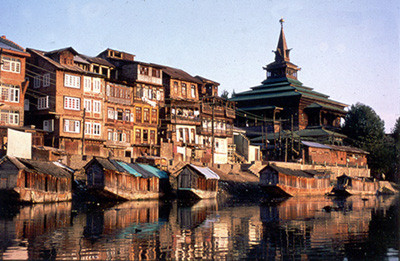
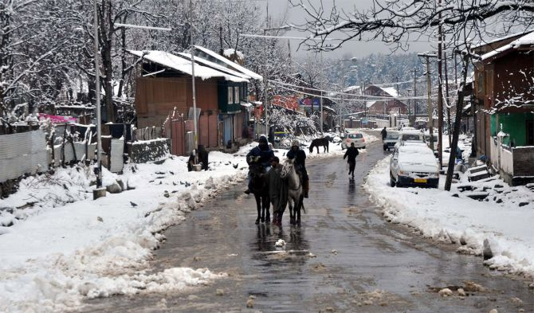

'With the sound of gushing water, aroma of pine trees, the vibrancy of saffron,
rise of azaan and an unfathomable calling, Kashmir surprises everyone'
Kashmir breathes within its locals and visitors alike with a pulse that they can sense,
a heartbeat that they can feel and an expression that they can personify.


"Every other beauty simply vanishes or feels less when
you once see how beautiful Kashmir is.
The valley, the mountains, the rivers-everything
about the stunning land continue to elevate its beauty at all
the juntions throwing new surprises"
Jammu and Kashmir, union territory of India is located in the
northern part of the Indian subcontinent
in the vicinity of the Karakoram and westernmost Himalayan mountain ranges.
Jammu is known as the City of Temples and offers
plentiful sightseeing opportunities with its gardens,
palaces, forts & religious attractions,
the most famous of which is Mata Vaishno Devi in Katra.
Kashmir Valley is famous for its meadows, lakes, high altitude passes,
hill stations, Mughal Gardens, Dal Lake,
Shikara Ride & ancient religious sites.
CULTURE AND HERITAGE
Culture of Jammu and Kashmir depicts the rich art and architecture and the culture of
medieval era, which is now the epitome. The culture of Jammu and Kashmir is distinct and
diverse, encompassing the various habits and lifestyles of the people inhabiting the regions
of Jammu, Kashmir and Ladakh.
During their long periods of independence, isolation and solidarity, the people of Kashmir
developed a unique culture making everlasting contributions to learning and literature.
The culture of Kashmir is a blend of multiple customs and came from Northern India,
Northern Pakistan and the Chinese territory of Aksai Chin. The state enjoys the
presence of mix religions and that’s why Kashmir is famous for its cultural heritage.
It amalgamates Hindu, Sikh, Muslim and Buddhist people who make Kashmir more beautiful
by adopting their own culture that has brought many changes in their living style.